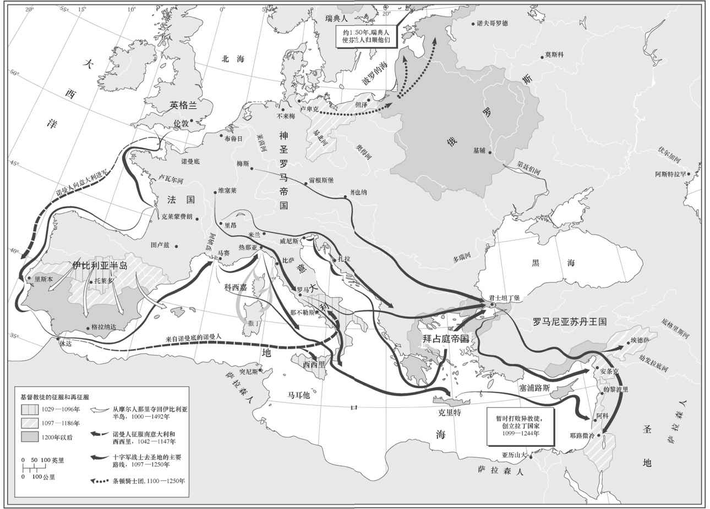
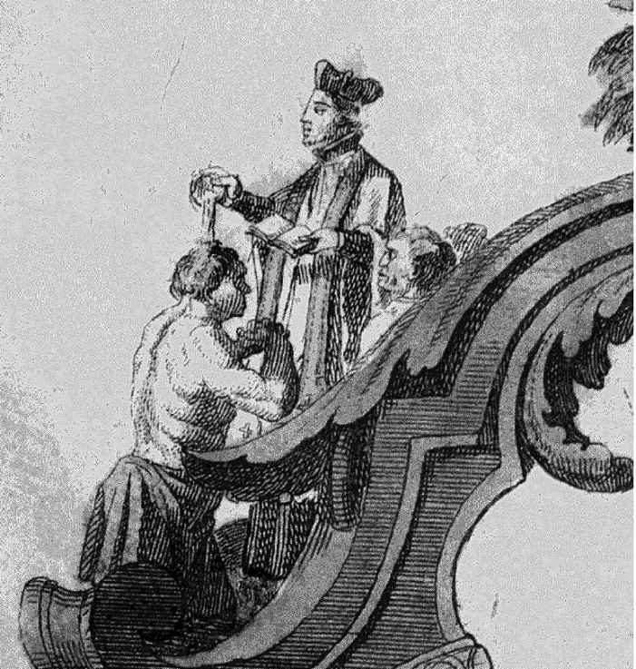
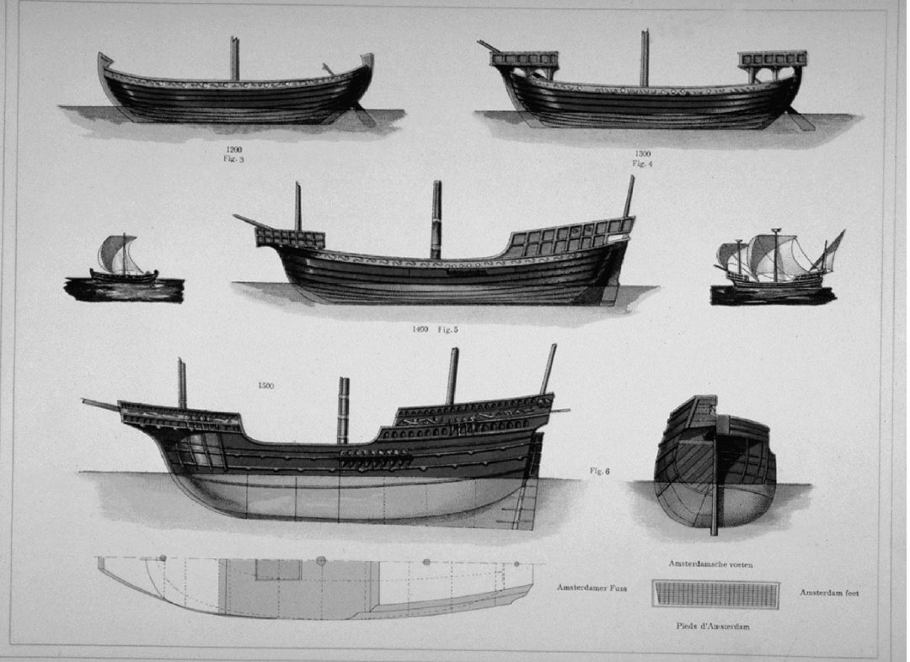

4世纪至10世纪期间，欧洲曾遭到日耳曼人、匈奴人、马扎尔人、维京人和穆斯林的侵略。但是，从10世纪至14世纪，这种局面却戏剧性地颠倒过来，欧洲开始全线进攻（见地图15）。各十字军在西班牙、意大利南部、西西里和荷兰击退了穆斯林，甚至占领了基督教拜占庭帝国。与此同时，在欧洲东北部，德意志边境地区的封建主正在侵占易北河东岸地区。当德意志的扩张继续向奥得河东岸伸展时，他们反对异教的普鲁士人，形成了由条顿骑士指挥的十字军东征。骑士们建立了许多要塞，并在要塞周围安置德意志移民；这些移民为进一步扩张提供了人力和物力。德意志商人随即占领沿海岸和河道的各战略要地，建立城市。因而，到15世纪末，过去曾由斯拉夫和波罗的海诸民族占据的广大地区，这时都变成了德意志各阶层——封建主、主教、市民和农民——的领土。

地图15 中世纪西方的扩张（11—15世纪）
有个时期，人们曾认为，这些十字军东侵实际上导致了中世纪后期每一种建设性的发展，其中包括贸易、城市和文化的发展。现在，这种说法已不再为人们所接受。相反，人们普遍认为，十字军东侵基本上是这些发展的结果而不是原因。如果不是先有技术进步、商业复兴、人口增长和人们普遍的精力充沛，十字军东侵是完全不可能的。这些推动力继续发展，并在14世纪大萧条后开始加速，结果，使十字军战士的扩张主义运动扩大到海外领土。
基督教及其传统的普救说、改变异教徒信仰的热情和十字军的好战精神，是西欧向海外扩张的一个重要因素。早期探险者及其支持者，其所作所为在一定程度上是出于宗教方面的考虑。13世纪马可·波罗的旅行使欧洲人知道了印度和中国的存在，并渴望到达这两个伟大的国家。他们还知道这些国家的人们并不是穆斯林，因此，希望他们能与基督教徒通力合作。另外，中世纪长期流传着有关祭司约翰的传说；约翰被传说为东方某一基督教国家的强有力的国王。几个世纪来，基督教首领梦想与他建立联系，从东、西两面大举进攻伊斯兰世界。欧洲人虽未找到祭司约翰，却在非洲和美洲偶然发现了陌生的新民族。这些民族还未开化，不信教，因此，是适于征服、拯救、使之归依的臣民。
在促使欧洲人开始海外冒险事业的许多动机中，为上帝服务和寻求黄金可能是最强烈的动机。瓦斯科·达·伽马向惊讶的印度人解释说，他来到他们所在的地区，是为了寻找基督教徒和香料。同样，征服者贝尔纳尔·迪亚斯在回忆录中写到，他和同伴到美洲去，是“为了像所有男子汉都想做到的那样，为上帝和皇帝陛下服务，将光明带给生活在黑暗中的人们，并发财致富”[4]。

图105 这位身穿独特的天主教教袍的耶稣会传教士正在为新法兰西的一个印度人施洗礼。法国耶稣会会士允许印度的一些基督教皈依者至少能保留自己的某些习俗，在这方面，他们比欧洲的大部分传教士更宽容。
西方技术的不断发展，也直接有助于海外扩张。这方面尤其重要的是在造船、仪器、航海技术和海军装备上所取得的进步。1200年至1500年间，欧洲船舶吨位平均增加一到两倍。600吨至800吨的圆体帆船，代替了150吨至200吨的长型单层甲板帆船。13世纪开始使用的船尾舵，迅速代替了陈旧、低效率的边舵。14世纪，葡萄牙人对阿拉伯三角帆船的索具的改进同样重要，它使船只更适于迎风航行。船体结构和船帆索具方面的这些进步表明，这时的船只是把北欧、地中海和中东原先发展起来的技术革新的成果结合在一起，其结果是船体更大，速度更快，操纵更灵敏，同时也更经济，因为它减少了100个至200个划桨手及其食物和装备，大大增加了存放货物的空间。
造船方面的这些进步总是同航海技术的进步携手并进。尤其重要的是对指南针、星盘和新地图的日益有效的使用；这些新地图是根据精确的罗盘方位和海岸线及港口的详情绘制而成。与此同时，欧洲人在海军装备方面正占据着决定性的、意义重大的领先地位。过去，海战是指占领敌船和甲板上的肉搏战。16世纪的前20年，佛兰德和德意志冶金学家发展了铸炮技术；这种大炮能射出弹丸，摧毁300码内的船只。海战发生了变化，由占领敌船的肉搏战变成了舷炮齐射的炮战，使欧洲人能占领并控制世界各大洋达4个世纪之久。欧洲人的优势随着1905年日本人在对马海峡对俄罗斯人的划时代的海战胜利而结束。
伴随着造船业、航海业和海军装备的发展而来的是商业经营方面的重要的新技术。意大利复式簿记的发明使随时确定商业上的财务情况成为可能。另外，货币的日益广泛的使用和普遍为人接受的标准硬币的铸造，便利了商业经营。银行和信用状的发展以及中世纪基督教对禁止贷款和利息费用这一做法的逐渐放弃，也有利于商业经营。最后，欧洲人开始海外扩张后，股份公司的发展大大地巩固了商业经营。这些股份公司以其有限责任，为投资提供了媒介，使欧洲大批资本用于海外冒险事业。东方商人因自身及其合伙人的资力有限，没有一个最终能成功地与东印度和黎凡特的几家公司、莫斯科公司以及现存的哈得孙湾公司相竞争。
总之，所有这些因素结合起来，使欧洲具有强大、独特的活力。这一活力究竟如何独特，当我们察看15世纪欧亚大陆对伊斯兰世界的扩张的各种反应时便可明白。如第十一章第五节所述，当时的伊斯兰教以扇形从中东向四面八方扩展。突厥人在攻陷君士坦丁堡后，占领了巴尔干半岛；然后渡过多瑙河，进军匈牙利，兵临维也纳城下。同样，在东方，富有魅力的巴布尔率领突厥人，正从阿富汗向南推进，开始建立伟大的莫卧儿帝国，统治印度，直到19世纪英国人接管为止。另外，在非洲，伊斯兰教正从东部和北部沿岸的基地向内地稳步传播。最后，穆斯林商人控制了欧亚大陆的海上航线，即从红海和波斯湾穿过印度洋、绕过东南亚、到达中国海的航线。

图106 帆船的演变。在欧洲人能安全地在大西洋上航行之前，他们需要更大的、操纵起来更灵活的船只。这幅图表明了帆船从中世纪末期到15世纪的演变。技术上的改进包括建造更大的舵、设立更多的桅杆，以及对帆作新的安排。
由于伊斯兰教的军人、商人和传教士所取得的这些进步，伊斯兰教世界变成了欧亚大陆的中心地区。它占领了这片大陆的战略中心，而且，它愈扩张，欧亚大陆东端的中国人和西端的欧洲人就愈孤立。中国人和欧洲人对这一包围的截然不同的反应，从当时到现在，都对世界历史的进程产生了深远的影响。
如前所述，尽管郑和的远征清楚地表明，中国人拥有控制海洋的技术和财力，但他们却自愿地撤退了。蒙古人的统治结束后，明朝的中国人将自己与外世隔绝。中国商人阶层缺乏西方商人所拥有的政治权力和社会地位，无力向禁止海外冒险事业的皇帝的敕令挑战。因而，中国人将其令人生畏的才能和精力转向内部，慎重地放弃了在欧亚大陆、最终在世界事务中的领先地位。
欧洲人的反应恰恰相反。蒙古统治下的和平使他们的地理视界开阔、商业野心变大，因此，蒙古帝国的突然崩溃使他们灰心丧气，留下深深怀念。同样，十字军失去地中海东部前哨基地，伊儿汗国在波斯实行伊斯兰教统治，突厥人征服巴尔干各国，所有这些都使欧洲人无法到达黑海、波斯湾和印度洋。因此，他们实际上被困在欧亚大陆的西端。意大利商人在地中海东部各港口继续同阿拉伯商人发生贸易交往，将货物转船运往西方，所以十分重要的香料贸易仍很繁荣。不过，虽然这一安排使作为经纪人获得厚利的意大利人和阿拉伯人感到满意，但是其他欧洲人却很不乐意。他们迫切希望找到某种方法，到达东方，分享财富。
由于他们有专门技术，有经济实力，有丰富的思想，还有相对抗的君主国之间的竞争，他们的追求必定成功。欧洲没有一个君主颁布禁令，禁止海外冒险事业；相反，各民族君主国展开了激烈的竞争。另外，欧洲对外国产品有真正的需要，有强烈的要求，而且商人们完全有能力满足这种需求。因此，即使哥伦布没有发现美洲大陆，达·伽马没有绕好望角航行，在以后的几十年中，其他人也会这么做。总之，西方社会已达到起飞点，准备起飞；当它起飞时，发现海路是畅通的，遂不可阻挡地扩张到全球各地。